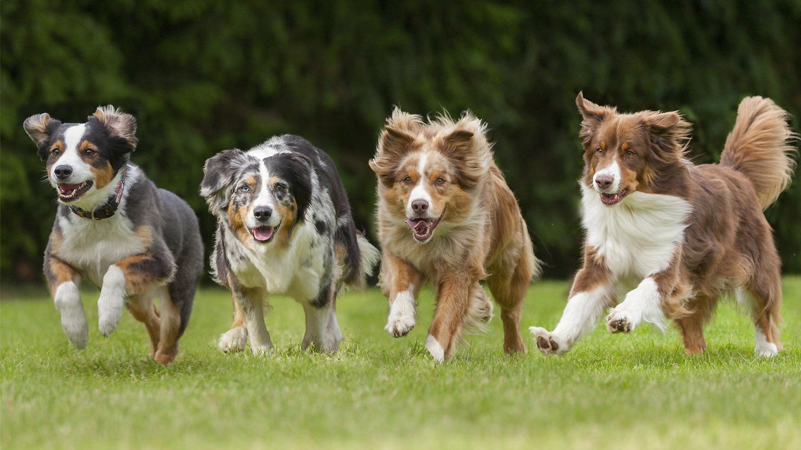

This is a simple, easy to use website that allows users to find dogs they like. It uses a listing format that allows the user to swipe through and view dogs around their location.

The website requires users to input a zipcode for a general location, along with a range value that determines the max distance that will be searched. Users can select a specific breed, age range, gender, size and color if wanted.
If you find a dog you love, click the favorite button to add to your list. You will be able to view the dog in your favorites list and be taken to the dogs webpage. Click the button below to get started!
If the user has the ID of a dog they like, they can skip going to the Find Your Dog section and input the ID in the searchbar. It will take the user to the dogs webpage immediately.
Gabriel Garcia, Alex Major, John Sinfuego and Ian Blankenship collaborated to make Find-A-Dog.